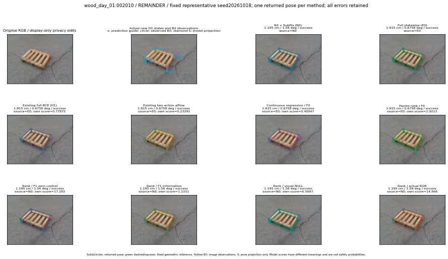

실선은 반환 자세, 초록 점선은 고정 기하 참조입니다. S는 영상 관측이 아닙니다. 점수는 모델별 의미가 다르며 보정된 안전 확률이 아닙니다. 개인정보 처리는 표시 사본에만 적용했습니다.
| 방법·seed | 위치 / 회전 / 공동성공 | 실제 출처 | 선택 후보 | 각 모델 자체 점수 |
|---|---|---|---|---|
| N0 | 1.195 cm / 1.56 deg / success | N0 | N/A | N/A |
| E0 | 1.915 cm / 0.6758 deg / success | E0 | N/A | N/A |
| E0_REGENERATED | 1.915 cm / 0.6758 deg / success | E0 | E0_REGENERATED | N/A |
| POSEFIX_SUBPIX_PF_ANCHOR | 1.575 cm / 1.121 deg / success | OTHER | N/A | N/A |
| POSEFIX_SUBPIX_YOLO_ANCHOR | 1.575 cm / 1.121 deg / success | OTHER | N/A | N/A |
| D1_H1_MLP_s20261018 | 1.915 cm / 0.6758 deg / success | E0 | E0_REGENERATED | 0.7787450551986694 |
| D1_H1_MLP_s20261019 | 1.915 cm / 0.6758 deg / success | E0 | E0_REGENERATED | 0.41279295086860657 |
| D1_H1_MLP_s20261020 | 1.915 cm / 0.6758 deg / success | E0 | E0_REGENERATED | 0.2690380811691284 |
| D1_H1_PAIR_MLP_s20261018 | 1.195 cm / 1.56 deg / success | N0 | N0 | -0.3851596415042877 |
| D1_H1_PAIR_MLP_s20261019 | 1.195 cm / 1.56 deg / success | N0 | N0 | -0.22424890100955963 |
| D1_H1_PAIR_MLP_s20261020 | 1.195 cm / 1.56 deg / success | N0 | N0 | 0.11545471101999283 |
| D1_H1_PAIR_ROLE_AFFINE_s20261018 | 1.915 cm / 0.6758 deg / success | E0 | E0_REGENERATED | 0.2329098880290985 |
| D1_H1_PAIR_ROLE_AFFINE_s20261019 | 1.915 cm / 0.6758 deg / success | E0 | E0_REGENERATED | 0.1743805706501007 |
| D1_H1_PAIR_ROLE_AFFINE_s20261020 | 1.915 cm / 0.6758 deg / success | E0 | E0_REGENERATED | 0.1339227259159088 |
| R_CONT_F0_s20261018 | 1.915 cm / 0.6758 deg / success | E0 | E0_REGENERATED | 0.4004734754562378 |
| R_CONT_F0_s20261019 | 1.915 cm / 0.6758 deg / success | E0 | E0_REGENERATED | 0.42951375246047974 |
| R_CONT_F0_s20261020 | 1.915 cm / 0.6758 deg / success | E0 | E0_REGENERATED | 0.4714389741420746 |
| R_ORDER_F0_s20261018 | 1.915 cm / 0.6758 deg / success | E0 | E0_REGENERATED | 2.001347780227661 |
| R_ORDER_F0_s20261019 | 1.195 cm / 1.56 deg / success | N0 | N0 | 7.567864418029785 |
| R_ORDER_F0_s20261020 | 1.195 cm / 1.56 deg / success | N0 | N0 | 8.904897689819336 |
| R_ORDER_F1_ZERO_s20261018 | 1.195 cm / 1.56 deg / success | N0 | N0 | 17.283191680908203 |
| R_ORDER_F1_ZERO_s20261019 | 1.915 cm / 0.6758 deg / success | E0 | E0_REGENERATED | 23.18824577331543 |
| R_ORDER_F1_ZERO_s20261020 | 1.195 cm / 1.56 deg / success | N0 | N0 | 11.253938674926758 |
| R_ORDER_F1_s20261018 | 1.195 cm / 1.56 deg / success | N0 | N0 | 1.2330982685089111 |
| R_ORDER_F1_s20261019 | 1.195 cm / 1.56 deg / success | N0 | N0 | 10.699934959411621 |
| R_ORDER_F1_s20261020 | 1.195 cm / 1.56 deg / success | N0 | N0 | 2.6654865741729736 |
| V_ORDER_NULL_s20261018 | 1.195 cm / 1.56 deg / success | N0 | N0 | 6.56967830657959 |
| V_ORDER_NULL_s20261019 | 1.195 cm / 1.56 deg / success | N0 | N0 | 5.490189552307129 |
| V_ORDER_NULL_s20261020 | 1.915 cm / 0.6758 deg / success | E0 | E0_REGENERATED | 3.844174385070801 |
| V_ORDER_RGB_s20261018 | 1.195 cm / 1.56 deg / success | N0 | N0 | 14.865966796875 |
| V_ORDER_RGB_s20261019 | 1.195 cm / 1.56 deg / success | N0 | N0 | 5.958071708679199 |
| V_ORDER_RGB_s20261020 | 1.195 cm / 1.56 deg / success | N0 | N0 | -8.095222473144531 |